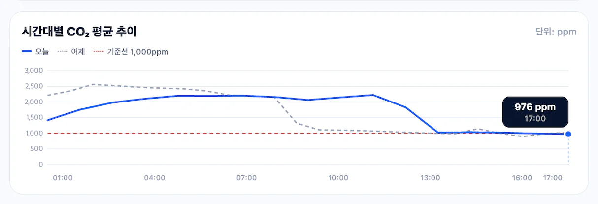
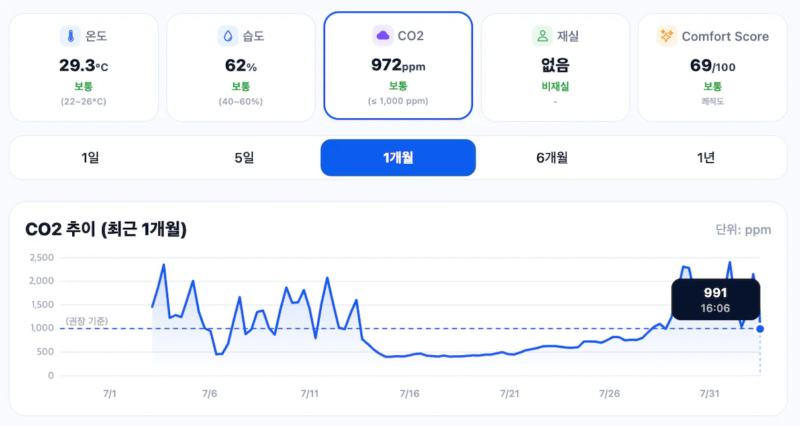

AIRS
통합 센서가 수집한 실내 온도·습도·CO₂ 데이터를 바탕으로 공간 상태를 파악하고, 쾌적한 실내 환경 관리를 돕는 지능형 공조 시스템입니다.
-
Spring Boot
-
MQTT
-
InfluxDB
- +16
Overview
프로젝트 정보
- 기간
- 2026.04–2026.07
- 팀 구성
- 5명 — PM, Hardware, Mobile, Backend, Frontend
- 역할
- 백엔드 개발 담당
- 담당 범위
- 전체 백엔드 API와 데이터베이스 설계
Technology
주요 기술
Backend
-
Java
-
Messaging
-
-
Eclipse Mosquitto
Data
-
MySQL
-
-
Redis
-
Flyway
Test & Ops
-
JUnit 5
- Testcontainers
-
Docker
-
GitHub Actions
ETC
-
Spring Data JPA
-
Spring Security · JWT
- Eclipse Paho
-
-
Redis Lua
-
-
Caddy
Contribution
담당 범위
Backend & Database
전체 백엔드 API와 MySQL·InfluxDB 데이터 구조를 설계했습니다.
Telemetry Ingestion
MQTT callback과 저장 작업을 분리하는 수집 구조 변경을 팀과 함께 진행했습니다.
Time-series & Cache
raw·rollup 조회와 Redis cache·동시 미스 제어를 직접 설계했습니다.
Application Delivery
인증·인가, Flyway migration, 테스트와 CI/CD 흐름을 담당했습니다.
System Design
아키텍처와 데이터베이스 설계


- 01MQTT 수신topic·payload 검증
- 02전달 판정boot_id·sequence_no
- 03분배nodeId striped worker
- 04상태 계산재실·센서 상태
- 05저장MySQL snapshot·InfluxDB raw
- 06조회Redis cache·raw/rollup
Troubleshooting
대표 문제 해결 사례
MQTT 수신과 저장 작업 분리
메시지 수신이 데이터베이스 저장을 기다리지 않도록 처리 흐름을 나눴습니다.
- 문제
- 센서 메시지가 짧은 시간에 몰리자 발행한 24,000건 중 10,141건만 InfluxDB에 저장됐고, Mosquitto에도 메시지 drop이 남았습니다. 이 상태에서는 시계열 이력뿐 아니라 최신 상태와 재실 판정도 함께 누락될 수 있었습니다.
- 원인
- MQTT callback이 메시지를 받은 뒤 순번 확인, 재실 판정, MySQL 갱신, InfluxDB 저장까지 한 흐름에서 처리하고 있었습니다. 저장 작업이 길어질수록 callback이 다음 메시지를 받지 못하는 구조였습니다.
- 해결
- callback은 메시지를 queue에 넘기는 역할만 맡기고, 실제 저장은 nodeId 기준 8개 worker가 처리하도록 분리했습니다. 같은 노드는 한 worker에서 순서대로 처리하고, 메시지가 계속 쌓이지 않도록 queue 크기를 제한했습니다. queue가 가득 차면 메시지를 버리는 대신 수신 속도를 늦추도록 했습니다.
- 결과
- 개발 Mac의 Docker staging에서 가상 노드 1,000개와 MQTT 연결 50개가 5초 주기·QoS 1로 120초간 발행한 24,000건을 모두 저장했습니다. 각 노드도 24건씩 일치했고 Mosquitto drop/error는 발생하지 않았습니다.
장기 시계열 조회에 rollup 적용
긴 기간의 시계열 조회가 5초 raw 전체를 매번 집계하지 않도록 조회 경로를 나눴습니다.

- 문제
- 5일·1개월 조회의 응답 point는 약 120개로 줄였지만, InfluxDB는 요청 기간에 포함된 5초 raw 데이터를 계속 읽고 있었습니다. 조회 기간이 길어질수록 첫 요청의 집계 비용이 커졌습니다.
- 원인
- downsampling은 raw 데이터를 읽은 뒤 반환할 point를 줄이는 방식이어서 InfluxDB가 읽는 데이터의 양은 달라지지 않았습니다. 캐시 역시 반복 요청은 줄일 수 있지만 캐시가 비어 있는 첫 조회의 비용은 해결하지 못했습니다.
- 해결
- 1일 조회는 raw를 사용하고, 5일·1개월은 hourly rollup, 6개월·1년은 daily rollup을 우선하도록 조회 경로를 나눴습니다. 1개월 조회는 hourly 데이터를 6시간 단위로 다시 묶었고, 필요한 rollup이 없으면 raw를 조회하도록 구성했습니다.
- 결과
- raw 17,279건의 평균·최솟값·최댓값·건수와 rollup 결과가 일치했습니다. 같은 CO₂ 분석 API의 단일 cold 요청은 당시 Raspberry Pi 내부 측정에서 7.385초 → 0.224초로 줄었습니다.
캐시 만료 순간의 중복 원본 조회 제한
같은 시계열 요청이 몰려도 먼저 들어온 한 요청만 원본을 조회하도록 했습니다.

- 문제
- 같은 노드·지표·기간의 캐시가 만료되는 순간 요청이 몰리면 모든 요청이 동일한 raw 또는 rollup을 다시 조회할 수 있었습니다. 트래픽이 집중되는 시점에 InfluxDB 조회도 함께 늘어나는 구조였습니다.
- 원인
- 일반적인 캐시는 이미 저장된 응답만 재사용하기 때문에 여러 요청이 동시에 캐시 미스를 만나는 상황은 조정하지 못했습니다. 애플리케이션 내부 lock만 사용하면 여러 인스턴스가 같은 Redis 캐시를 사용할 때 서로의 조회 상태도 알 수 없었습니다.
- 해결
- Redis 잠금을 먼저 얻은 요청만 원본을 조회하고, 나머지 요청은 먼저 만들어진 캐시를 기다려 사용하도록 했습니다. 잠금은 소유자를 확인한 뒤 연장·해제하고, 이전 응답이 남아 있으면 갱신 중에도 재사용합니다. Redis에 문제가 생기면 API 요청은 InfluxDB 직접 조회로 이어지도록 했습니다.
- 결과
- 같은 캐시 키를 비운 뒤 20~500 VU로 요청했을 때 Spring의 원본 loader는 각 실행에서 한 번만 호출됐고 fallback은 발생하지 않았습니다. 500 VU에서는 P95가 약 1.1초까지 늘어, 중복 조회를 줄인 뒤에도 요청 대기시간은 별도로 살펴야 했습니다. 캐시가 채워진 동일 조회는 Mac staging의 Caddy 경로에서 30초 동안 실제 994.682 RPS로 처리했으며, 30,002건에서 실패와 dropped iteration은 없었습니다.
중복·순서 역전 telemetry를 저장 전에 차단
장치의 부팅 세션과 순번을 함께 비교해 과거 데이터가 최신 상태를 되돌리지 않게 했습니다.
- 문제
- QoS 1 재전송이나 늦게 도착한 메시지를 그대로 처리하면 InfluxDB에 같은 이력이 중복 저장될 수 있었습니다. MySQL의 최신 상태와 재실 판정도 과거 데이터로 바뀔 수 있었습니다.
- 원인
sequence_no만 비교하면 장치가 재부팅된 뒤 0부터 시작하는 정상 메시지도 과거 데이터로 판단하게 됩니다. Redis 값을 읽고 애플리케이션에서 비교한 뒤 다시 저장하면 동시 요청 사이에 값이 바뀔 가능성도 있었습니다.- 해결
boot_id별로 마지막sequence_no를 관리하고, Redis Lua에서 순번 비교와 갱신을 한 번에 처리했습니다. 같은 순번과 작은 순번은 재실 계산과 MySQL·InfluxDB 저장 전에 중단했습니다. Redis에 문제가 생겼을 때는 센서 수집 자체가 멈추지 않도록 기존 저장 경로를 사용했습니다.- 결과
- 테스트에서 최초·증가 순번은 저장되고, 같은·작은 순번은 차단되는 것을 확인했습니다. 차단된 메시지는 MySQL snapshot과 InfluxDB raw writer까지 전달되지 않았고, 순번 정보가 없는 기존 payload도 계속 처리됐습니다.
Backend Engineering
백엔드 품질을 연결한 작업
데이터 저장 경계
MySQL은 관계·제약과 최신 snapshot, InfluxDB는 반복 시계열, Redis는 재생성 가능한 응답과 원자 연산이 필요한 단기 상태를 맡겼습니다.
인증과 인가
JWT로 사용자를 식별하고, 실제 접근은 DB의 ROOT_ADMIN·ADMIN·USER 역할, 관리자 승인 상태와 캠퍼스 범위를 요청마다 확인했습니다.
스키마와 배포
Flyway migration을 MySQL Testcontainers로 검증하고, GitHub Actions 테스트·Docker Compose 기동·health check·Caddy HTTPS를 배포 흐름으로 연결했습니다.
배포 경로 확인
Raspberry Pi의 공개 HTTPS 경로에서 인증·인가를 포함한 혼합 읽기 요청을 30분간 실행했습니다. 총 9,001건에서 실패와 dropped iteration은 없었고 P95는 314.64ms였습니다.